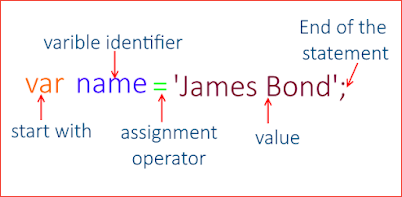
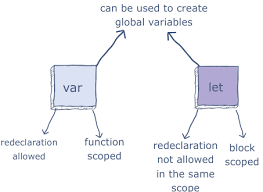
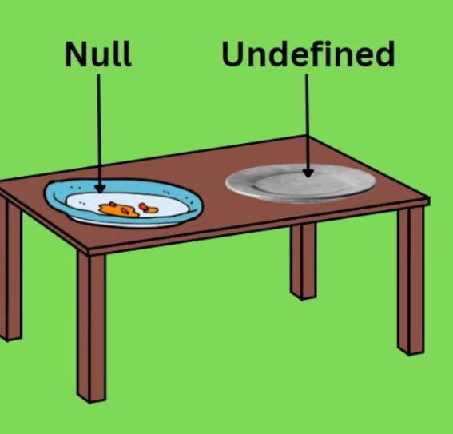
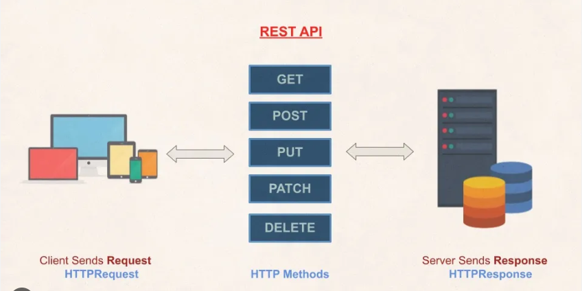

Question & ANS
1. Discuss the scope of var, let, and const
var
The var statement declares a variable. Variables are containers for storing information. Creating a variable in JavaScript is called "declaring" a variable: var carName; After the declaration, the variable is empty it has no value.
The var statement declares function-scoped or globally-scoped variables, optionally initializing each to a value.

let
The keyword let in Javascript is used to declare a variable that is block scoped in JavaScript. In JavaScript, the var keyword is typically used to declare a variable that is treated like any other variable, whereas variables declared using the let in JavaScript are block scoped
The let declaration declares re-assignable, block-scoped local variables, optionally initializing each to a value.

const
We use the const keyword in JavaScript to declare variables whose value can be initialized only at the time of declaration. It is similar functionality of declaring variables as the other keywords provided in JavaScript i.e. var and let.
the const keyword in JavaScript to declare variables whose value can be initialized only at the time of declaration.

2.Tell us the use cases of null and undefined
null
Null is an object in JavaScript and represents primitive data types. A null value in JavaScript is used for referring absence of any object value and if any function or variable returns null, then we can infer that the object could not be created.
When to Use null (And When Not to Use It) The basic rule is simple: null should only be allowed when it makes sense for an object reference to have 'no value associated with it'. an object reference can be a variable, constant, property (class field), input/output argument, and so on.
undefined
The undefined property indicates that a variable has not been assigned a value, or not declared at all.
An undefined variable or anything without a value will always return "undefined" in JavaScript. This is not the same as null, despite the fact that both imply an empty state. You'll typically assign a value to a variable after you declare it, but this is not always the case.

3.What do you mean by REST API
REST API
A RESTful API is an architectural style for an application program interface (API) that uses HTTP requests to access and use data. That data can be used to GET, PUT, POST and DELETE data types, which refers to the reading, updating, creating and deleting of operations concerning resources.
RESTful APIs use HTTP requests to interact with data, while traditional APIs can use a variety of protocols.
The most common scenario of using REST APIs is to deliver static resource representations in XML or JSON. However, this architectural style allows users to download and run code in the form of Java applets or scripts
